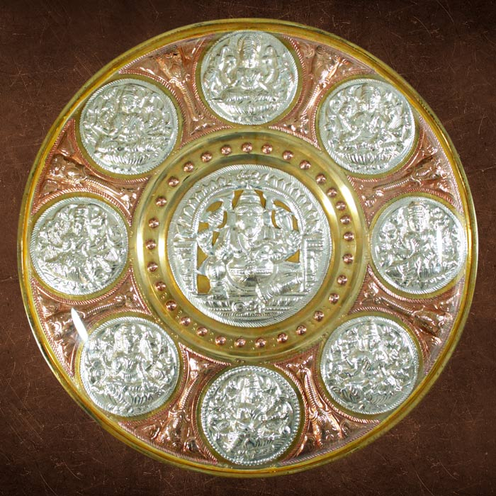

Kanchipuram Silk Sarees

Origin: Kanchipuram, Tamil Nadu
Description: Kanchipuram silk sarees are among the finest silks in India, handwoven with pure mulberry silk thread. Known for their durability, contrast colors, and heavy gold zari work.
Unique Features: The border and body are woven separately and then interlocked together. Contains 57% silver and weighs between 400-900 grams.
GI Tag Year: 2005
Source: Handloom Export Promotion Council / GI Registry
Nilgiri Tea

Origin: Nilgiri Hills, Tamil Nadu
Description: Nilgiri tea is known for its fragrant, bright, brisk, and aromatic flavor. Grown at altitudes of 1,000 to 2,500 meters in the Blue Mountains.
Characteristics: Medium-bodied with fruity notes, excellent for iced tea. Available in orthodox and CTC varieties.
GI Tag Year: 2007
Thanjavur Paintings

Origin: Thanjavur, Tamil Nadu
Description: Thanjavur paintings are classical South Indian paintings characterized by rich colors, simple iconic composition, glittering gold foils, and embedded gems.
Themes: Predominantly Hindu gods and goddesses. Made on wooden planks with gold leaf overlay work.
GI Tag Year: 2007
Source: Tamil Nadu Handicrafts Development Corporation / GI Registry
Madurai Sungudi

Origin: Madurai, Tamil Nadu
Description: Sungudi is a traditional tie-dye cotton fabric with small dots (chukkis) created using a resist-dyeing technique. Historically worn by Tamil women as everyday wear.
Process: Fabric is tied at multiple points and dyed, creating unique patterns. Natural dyes are traditionally used.
GI Tag Year: 2019
Tanjore Art Plate
Origin: Thanjavur, Tamil Nadu
Description: Decorative brass plates featuring embossed designs of deities, nature, and traditional motifs. A distinctive craft combining metalwork and artistry.
Characteristics: Made from brass alloy, intricate embossing work, antique finish.
GI Tag Year: 2007